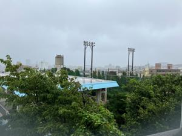
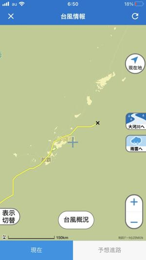
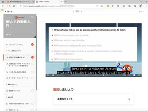

うるがいの話 ある日
最新: 台風の被害は空き缶【うるがいの話 ある日】とは 一日だけのプログです
『うるがいの話』の最新一日だけのプログで、通信料が少なく経済的だ。カニの画像をクリックすると全ての日付が載る『うるがいの話』サイトを表示します
|
|
【うるがいの話】 うるがい(ｳﾙｶﾞｲ urugai)とは、『もずくがに』の名前でとても大きくなります。 |
|---|---|
|
|
【カミマヤーの話】 猫のことを方言でマヤーといいます。カミマヤー（kamimayaa）とは、神の猫のことです。 |
|
【たながぁの音楽】 たながぁ（ﾀﾅｶﾞｰ tanagaa）とは手長えびのことで、何種類かあり大きいのは車 エビぐらいになります。 |

|
【ぶながぁの話】 ぶながぁ(ﾌﾞﾅｶﾞｰ bunagaa)とは、赤い髪の毛、赤い身体、そして身長は１ｍ２０ｃｍ ぐらい、川の蟹を食べているの目撃された。場所は沖縄県国頭郡大宜味村のと ある村僕の隣近所に住んでいる爺さんから、聞いた話です。 |
|
|
【ギーマの話】 ギーマ(giima)とは、山原の里山に咲くスズランに似た、 花を付けます。実は食べられます、 気が付くと口の周りが紫になっています。 |
2023年06月02日 (金）台風の被害は空き缶
15:29
 
朝５時、スマホで台風の位置を確認するとまだ北部にいた。雨は既に上がって
いた。そのあと台風対策のため縛っていた門の紐を外すため、外に出るとビー
ルの空き缶が、屋敷の中と駐車場の前に落ちていた。小さい台風で良かった。
ひさびさに本島を縦断している。８時過ぎに横なぐりの激しい雨が、降ってき
た休校で良かったと思う。まだ風が強いこの天気だが、子供は普通に仕事に行
っただろうとフト思う。

先月から、スタディしているＲＰＡ（ロボティックプロセスオートメーション
）のＵｉＰａｔｈにあるレコーディング機能が、専門書やプログの説明通り操
作をしても、上手く動作しない。ネットでの検索ではお手上げ状態、無料のＵ
ｉＰａｔｈアカデミーでＲＰＡの基礎から実践まで学ぶ！ことにした。動画が
流すとネイティブの英語が流れる！、おおぇ、日本語字幕にすることが説明さ
れた。これで、学習できるホットする。チャントした学習カリキュラムで演習
問題を８割以上とらないと合格しない。今日の学習は、５０点だった（合格す
るまで何度も挑戦できるが）。トホホ言い訳じゃないけど内容は、もとその筋
の人でも難しいぜ。当分は、これで暇を潰すとする。そういえば、英語で書か
れたルビ訳ありの『アルジャーノンに花束を』（３０１頁）は５月３０日（開
始は４月１７日）でなんとか完読した。時々英語は、マスターできれば良いこ
とに越したことはないと痛感する。コドモは、海外で英語が通用することが実
感できたと言っていた。もう一人の子供は、韓国語の教室に毎週いっている。
映画などはある程度、理解できると言っていた。なぜ、韓国語なのかと思うが
韓国へ旅行が、実現したら教室を卒業すると言っている。
１５時２４分 ビットコインの総資産 ￥１０、９３７（↓５２）